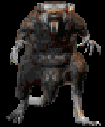

|

|
The giant rat bares its yellow teeth in defiance. A smell of rot emanates from its filthy coat.
|
Weapon To Use
|
The Loot
|
|
Anything
|
Elderberry
Herb
Brown Mushroom
Edible Mushroom
Signet Ring
Shilling
|
|
Info & Tips
|
- Attack: Normal
- Spells: None
- Location: Mainland Sewers, Near Towns
- Karma: Evil, -16
- HP Requisite: 20+
- Tougher Limit: 25 to 28 +/-
|
|